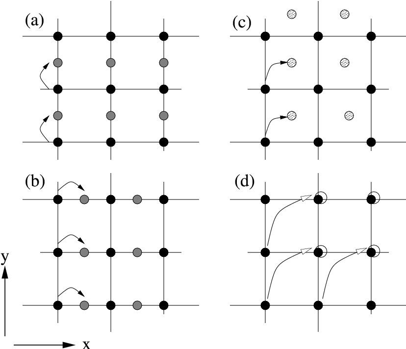
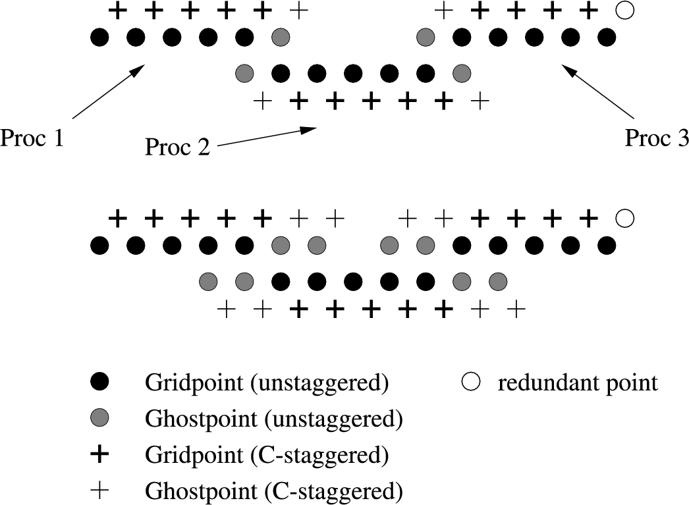

This chapter goes into the nitty-gritty of writing a thorn. It introduces key concepts for thorns, then goes on to give a brief outline of how to configure a thorn. There is then some detail about concepts introduced by the configuration step, followed by discussion of code which you must put into your files in order to use Cactus functionality, and details of utility functions you may use to gain extra functionality.
A thorn is the basic working module within Cactus. All user supplied code goes into thorns, which are, by and large, independent of each other. Thorns communicate with each other via calls to the flesh API, plus, more rarely, custom APIs of other thorns.
The connection from a thorn to the flesh, or to other thorns, is specified in configuration files which are parsed at compile time and used to generate glue code which encapsulates the external appearance of a thorn.
Thorn names must be (case independently) unique, must start with a letter, can only contain letters, numbers or underscores, and must contain 27 characters or less. In addition, a thorn cannot have the name doc, this is reserved for arrangement documentation. Arrangement names which start with a ‘#’, or finish with ‘~’ or ‘.bak’ will be ignored.
Thorns are grouped into arrangements. This is a logical grouping of thorns which is purely for organisational purposes. For example, you might wish to keep all your initial data thorns in one arrangement, and all your evolution thorns in another arrangement, or you may want to have separate arrangements for your developments, private and shared thorns.
The arrangements live in the arrangements directory of the main Cactus directory. Arrangement names must be (case independently) unique, must start with a letter, and can only contain letters, numbers or underscores. Arrangement names which start with a ‘#’, or finish with ‘~’ or ‘.bak’ will be ignored.
Inside an arrangement directory there are directories for each thorn belonging to the arrangement.
One of the key concepts for thorns is the concept of the implementation. Relationships among thorns are all based upon relationships among the implementations they provide. In principle, it should be possible to swap one thorn providing an implementation with another thorn providing that implementation, without affecting any other thorn.
An implementation defines a group of variables and parameters which are used to implement some functionality. For example, the thorn CactusPUGH/PUGH provides the implementation driver. This implementation is responsible for providing memory for grid variables and for communication. Another thorn can also implement driver, and both thorns can be compiled in at the same time. At runtime, the user can decide which thorn providing driver is used. No other thorn should be affected by this choice.
When a thorn decides it needs access to a variable or a parameter provided by another thorn, it defines a relationship between itself and the other thorn’s implementation, not explicitly with the other thorn. This allows the transparent replacement, at compile or runtime, of one thorn with another thorn providing the same functionality as seen by the other thorns.
A thorn consists of a subdirectory of an arrangement containing four administrative files:
the Cactus interface, which defines the grid functions, variables, etc. See Appendix D2.2.
the parameters introduced by this thorn, and the parameters needed from other thorns. See Appendix D2.3.
scheduling information for routines called by the flesh. See Appendix D2.4.
configuration options for the thorn. See Appendix D2.5.
Thorns can also contain
To simplify the creation of a thorn, a make target gmake newthorn has been provided. When this is run:
The interaction of a thorn with the flesh and other thorns is controlled by certain configuration files.
These are:
This defines the implementation (Section C1.1.3) the thorn provides, and the variables the thorn needs, along with their visibility to other implementations.
This defines the parameters that are used to control the thorn, along with their visibility to other implementations.
This defines which functions are called from the thorn and when they are called. It also handles memory and communication assignment for grid variables.
This file is optional for a thorn. If it exists, it contains extra configuration options of this thorn.
Cactus Configuration Language (CCL) files are simple text files used to define configuration information for a thorn. CCL files are case independent, and may contain comments introduced by the hash ‘#’ character, which indicates that the rest of the line is a comment. If the last non-blank character of a line in a CCL file is a backslash ‘\’, the following line is treated as a continuation of the current line.
The interface.ccl file is used to declare
The implementation is declared by a single line at the top of the file
There are three different access levels available for variables
Can be ‘inherited’ by other implementations (see below).
Can be shared with other implementations which declare themselves to be friends of this one (see below).
Can only be seen by this thorn.
Corresponding to the first two access levels there are two relationship statements that can be used to get variables (actually groups of variables, see below) from other implementations.
This gets all Public variables from implementation <name>, and all variables that <name> has in turn inherited. An implementation may inherit from any number of other implementations.
This gets all Protected variables from implementation <name>, but, unlike inherits, it is symmetric and also defines a transitive relation by pushing its own implementation’s Protected variables onto implementation name. This keyword is used to define a group of implementations which all end up with the same Protected variables.
So, for example, an interface.ccl starting
Cactus variables, described in Chapter C1.3, are placed in groups with homogeneous attributes, where the attributes describe properties such as the data type, group type, dimension, ghostsize, number of timelevels, type of staggering and distribution.
For example, a group, called realfields of 5 real grid functions (phi, a, b, c, d), on a 3D grid, would be defined by
or, for a group called intfields consisting of just one distributed 2D array of integers,
where xsize, ysize, gxsize, gysize are all parameters defined in the thorn’s param.ccl.
By default, all groups are private, to change this, an access specification of the form public: or protected: (or private: to change it back) may be placed on a line by itself. This changes the access level for any group defined in the file from that point on.
All variables seen by any one thorn must have distinct names.
Users control the operation of thorns via parameters given in a file at runtime. The param.ccl file is used to specify the parameters used to control an individual thorn, and to specify the values these parameters are allowed to take. When the code is run, it reads a parameter file and sets the parameters if they fall within the allowed values. If a parameter is not assigned in a parameter file, it is given its default value.
There are three access levels available for parameters:
These parameters are seen by all thorns.
These parameters may be used by other implementations if they so desire.
These are only seen by this thorn.
A parameter specification consists of:
A distinct string with only a few known allowed values.
An arbitrary string, which must conform to a given regular expression.
A boolean type which can take values 1, t, true, yes or 0, f, false, no.
For the numeric types INT and REAL, a range consists of a string of the form lower-bound:upper-bound:step, where a missing number or an asterisk ‘*’ denotes anything (i.e. infinite bounds or an infinitesimal step).
For example,
defines a REAL parameter, a BOOLEAN parameter, a KEYWORD, and an array of REAL parameters.
By default, all parameters are private; to change this, an access specification of the form global: or restricted: (or private: to change it back) may be placed on a line by itself. This changes the access level for any parameter defined in the file from that point on.
To access restricted parameters from another implementation, a line containing shares: <name> declares that all parameters mentioned in the file, from now until the next access specification, originate in implementation <name>. (Note that only one implementation can be specified on each shares: line.) Each of these parameters must be qualified by the initial token USES or EXTENDS, where
indicates that the parameters range remains unchanged.
indicates that the parameters range is going to be extended.
In contrast to parameter declarations in other access blocks, the default value must be omitted—it is impossible to set the default value of any parameter not originating in this thorn. For example, the following block adds possible values to the keyword initial_data originally defined in the implementation einstein, and uses the REAL parameter speed.
Note that you must compile at least one thorn which implements einstein.
By default, no routine of a thorn will be run. The schedule.ccl file defines those that should be run, and when and under which conditions they should be run.
The specification of routine scheduling is via a schedule block which consists of lines of the form
For routines, run before the grid hierarchy is set up, for example, function registration.
For routines that check parameter combinations, routines registered here only have access to the grid size and the parameters.
Responsible for setting up coordinates, etc.
For generating initial data.
Tasks which must be applied after initial data is created.
Stuff done before the evolution step.
The evolution step.
Stuff done after the evolution step.
For analysing data.
The other options allow finer-grained control of the scheduling. It is possible to state that the routine must run BEFORE or AFTER another routine or set of routines. It is also possible to schedule the routine under an alias name by using AS <alias_name>.
The LANG keyword specifies the linkage of the scheduled routine which determines how to call it from the scheduler. C and Fortran linkage are possible here. C++ routines should be defined as extern "C" and registered as LANG: C.
The STORAGE keyword specifies any groups for which memory should be allocated for the duration of the routine. The storage status reverts to its previous status after the routine returns. The format of the STORAGE statement includes specifying the number of timelevels of each group for which storage should be activated.
STORAGE: <group1>[timelevels1], <group2>[timelevels2]
This number can range from one to the maximum number of timelevels for the group, as specified in the group definition in its interface.ccl file. If this maximum number is one, the timelevel specification can be omitted from the STORAGE statement. Alternatively timelevels can be the name of a parameter accessible to the thorn. The parameter name is the same as used in C routines of the thorn, fully qualified parameter names of the form thorn::parameter are not allowed.
TRIGGERS is used when the routine is registered at ANALYSIS. This is a special time bin; a routine registered here will only be called if one of the variables from a group in TRIGGERS is due for output. (A routine without TRIGGERS declaration will always be called.)
The keyword SYNC specifies groups of variables which should be synchronised (that is, their ghostzones should be exchanged between processors) on exit from the routine. Specifying synchronisation of grid variables in schedule.ccl is an alternative to calling the functions CCTK_SyncGroup() or CCTK_SyncGroupsI() (see the Reference Manual) from inside a routine. Using the SYNC keyword in the schedule.ccl is the preferred method, since it provides the flesh with more information about the behaviour of your code.
Besides schedule blocks, it’s possible to embed C style if/else statements in the schedule.ccl file. These can be used to schedule things based upon the value of a parameter.
Example I:
If the parameter evolve_hydro is positively set, the Fortran routine hydro_predictor is scheduled to run in the evolution loop, after the routine metric_predictor and before metric_corrector. The routine names metric_predictor and metric_corrector, may either be real routine names from the same or a different thorn, or they may be aliased routine names (see the next example).
Before entry to hydro_predictor, storage will be allocated for one timelevel for the group of grid variables hydro_variables on exit from the routine this storage will be deallocated and the contents of the variables will be lost.
If the parameter evolve_hydro is set negatively, the hydro_predictor routine will not be called by the scheduler. Note that if the evolve_hydro parameter is STEERABLE, it can be dynamically scheduled and de-scheduled during a run if a steering interface is available.
Example II:
The thorns WaveToy77 and WaveToyC, each provide a routine to evolve the 3D wave equation: WaveToyF77_Evolution and WaveToyC_Evolution. The routine names have to be different, so that both thorns can be compiled at the same time, their functionality is identical though. Either one of them can then be activated at run time in the parameter file via ActiveThorns.
Since each evolution routine provides the same functionality, it makes sense to schedule them under the common alias WaveToy_Evolution to allow relative scheduling (BEFORE/AFTER) independent of the actual routine name (which may change depending on the activation in the parameter file).
In both cases, the group of variables scalarfield are synchronised across processes when the routine is exited.
The thorn IDScalarWave schedules the routine WaveBinary after the alias WaveToy_Evolution. It is scheduled independently of the C or Fortran routine name.
Storage Outside of Schedule Blocks The keyword STORAGE can also be used outside of the schedule blocks to indicate that storage for these groups should be switched on at the start of the run. Note that the storage is only allocated in this way at the start; a thorn could explicitly switch the storage off (although this is not recommended practise). As for the STORAGE statement in schedule blocks, each group must also specify how many timelevels to activate storage for.
[NOTE: the configuration.ccl is a new feature, and not all the features described in this section have been fully implemented yet. PROVIDES, REQUIRES and SCRIPT should work, but OPTIONAL is still being developed.]
The configuration.ccl file is optional. It can be used for two purposes: to detect certain features of the host system, such as the presence or absence of libraries, variable types, etc, or the location of libraries; or to provide access to certain functions too complex or otherwise not suitable for function aliasing.
The basic concept here is that a thorn can either provide or use a capability. A thorn providing a capability can specify a script which is run by the CST to detect features and write any configuration files; the script may output lines to its standard output to inform the CST of features to: add to the header files included by thorns using this capability; add to the make files used to build thorns using this capability; or add to the main Cactus link line. The script may also indicate that this capability is not present by returning a non-zero exit code—e.g. if the thorn is providing access to an external library, it should return an error if the library is not installed on the system.
A thorn may either require a capability to be present, in which case it is an error if there is no thorn providing that capability in the configuration’s ThornList, or it may optionally use a capability, in which case a macro is defined in the thorn’s header file if a thorn providing the capability is present.
A configuration.ccl file has the form:
which states that this thorn provides the capability My_Capability, and a script MyConfigScript should be run to detect features of this capability; the script is in language My_Language—the CST will use the appropriate environment or interpreter to invoke the script.
The example requires a thorn providing Another_Capability to be in the ThornList, and, if a thorn providing Yet_Another_Capability is in the ThornList, the preprocessor macro macro will be defined, and set to 1.
As an example, a thorn A may be able to use PVM for parallelism if it is present, but can still work in the absence of it. There could be a thorn providing PVM, and thorn A would then have
The code in thorn A could then have
to pick the appropriate mode.
The syntax of the output of the configure script is described in Appendix D2.5.1.
The make system uses file extensions to designate coding language, as well as other properties of the code in the file.
The following extensions are understood:
| Extension | Language | Format | Preprocess |
| .F | Fortran 90 | fixed | yes |
| .f | Fortran 90 | fixed | no |
| .F90 | Fortran 90 | free | yes |
| .f90 | Fortran 90 | free | no |
| .F77 | Fortran 77 | fixed | yes |
| .f77 | Fortran 77 | fixed | no |
| .c | C | - | yes |
| .cc or .C | C++ | - | yes |
| .cu | CUDA | - | yes |
In order to use Cactus #include directives in a file, it must be preprocessed.
A complete description of Fortran fixed and free format can be found in any textbook on Fortran 90. The most obvious differences are that in fixed format, code must begin after the 5th column and line continuations are indicated by a character in column 5, while in free format, lines can begin anywhere, and line continuations are indicated by an ampersand at the end of the line to be continued. Also note that statement labels are handled very differently.
The following restrictions apply to file names:
By default, the CCTK looks in the src directory of the thorn for source files.
There are two ways in which to specify the sources. The easiest is to use the make.code.defn based method in which the CCTK does all the work, but you may instead put a Makefile in the src directory and do everything yourself.
This is the standard way to compile your thorn’s source files. The Cactus make system looks for a file called make.code.defn in that directory (if there is no file called Makefile in the src directory). At its simplest, this file contains two lines
Each subdirectory listed should then have a make.code.defn file containing just a SRCS = line, a SUBDIRS = line will be ignored.
In addition, each directory can have a make.code.deps file, which, for files in that directory, can contain additional make rules and dependencies for files in that directory. See the GNU Make documentation for complete details of the syntax.
This method gives you the ultimate responsibility. The only requirement is that a library called $NAME be created by the Makefile.
The makefile is passed the following variables
the main Cactus directory
the configuration directory
the directory in which the source files can be found
the directory containing the configuration files
the thorn name
the scratch directory where Fortran 90 module files should end up if they need to be seen by other thorns.
the name of the library to be built
and has a working directory of <config>/build/<thorn_name> .
A grid variable is a Cactus program variable passed among thorns, (or routines belonging to the same thorn interface), by way of calls to the flesh. They are the only variables known to Cactus. Such variables represent values of functions on the computational grid, and are, therefore, often called grid functions.
In the Cactus context, grid variables are often referred to simply as variables.
Cactus variables are used instead of local variables for a number of reasons:
Cactus variables are collected into groups. All variables in a group are of the same data type, and have the same attributes. Most Cactus operations act on a group as a whole. A group must be declared in its thorn’s interface.ccl file.
The specification for a group declaration (fully described in Appendix D2.2) is,
Currently, the names of groups and variables must be distinct.
Cactus supports integer, real, complex and character variable types, in various different sizes. (Sizes in the following refer to the number of bytes occupied by the a variable of the type).
CCTK_INT, CCTK_INT1, CCTK_INT2, CCTK_INT4, CCTK_INT8. (CCTK_INT defaults to being CCTK_INT4).
CCTK_REAL, CCTK_REAL4, CCTK_REAL8, CCTK_REAL16. (CCTK_REAL defaults to being CCTK_REAL8).
CCTK_COMPLEX, CCTK_COMPLEX8, CCTK_COMPLEX16, CCTK_COMPLEX32. (CCTK_COMPLEX defaults to being CCTK_COMPLEX16).
This is a 1 byte data type.
Normally a thorn should use the default types—CCTK_INT, CCTK_REAL, CCTK_COMPLEX—rather than explicitly setting the size, as this gives maximum portability. Also, the defaults can be changed at configuration time (see Section B2.1.1), and this allows people to compile the code with different precisions to test for roundoff effects, or to run more quickly with a lower accuracy.
Groups can be either scalars, grid functions (GFs), or grid arrays. Different attributes are relevant for the different group types.
This is just a single number, e.g. the total energy of some field. These variables aren’t communicated between processors—what would be the result of such communication?
This is the most common group type. A GF is an array with a specific size, set at run time in the parameter file, which is distributed across processors. All GFs have the same size, and the same number of ghostzones. Groups of GFs can also specify a dimension, number of timelevels, and stagger type.
This is a more general form of the GF. Each group of arrays can have a distinct size and number of ghostzones, in addition to dimension, number of timelevels and stagger type. The drawback of using an array over a GF is that a lot of data about the array can only be determined by function calls, rather than the quicker methods available for GFs.
These are best introduced by an example using finite differencing. Consider the 1-D wave equation
|
| (C1.1) |
To solve this by partial differences, one discretises the derivatives to get an equation relating the solution at different times. There are many ways to do this, one of which produces the following difference equation
|
| (C1.2) |
which relates the three timelevels t + Δt, t, and t - Δt.
Obviously, the code could just use three variables, one for each timelevel. This turns out, however, to be inefficient, because as soon as the time is incremented to t + Δt, it would be necessary to copy data from the t variable to the t - Δt variable and from the t + Δt variable to the t variable.
To remove this extraneous copy, Cactus allows you to specify the number of timelevels used by your numerical scheme. It then generates variables with the base name (e.g. phi) suffixed by a qualifier for which timelevel is being referred to—no suffix for the next timelevel, and _p for each previous timelevel.
The timelevels are rotated (by the driver thorn) at the start of each evolution step, that is:
Timelevel rotation means that, for example, phi_p now holds the values of the former phi, and phi_p_p the values of the former phi_p, etc. Note that after rotation, phi is undefined, and its values should not be used until they have been updated.
All timelevels, except the current level, should be considered read-only during evolution, that is, their values should not be changed by thorns. The exception to this rule is for function initialisation, when the values at the previous timelevels do need to be explicitly filled out.
A Cactus grid function or array has a size set at runtime by parameters. This size can either be the global size of the array across all processors (DISTRIB=DEFAULT), or, if DISTRIB=CONSTANT, the specified size on each processor. If the size is split across processors, the driver thorn is responsible for assigning the size on each processor.
Cactus is based upon a distributed computing paradigm. That is, the problem domain is split into blocks, each of which is assigned to a processor. For hyperbolic and parabolic problems the blocks only need to communicate at the edges.
To illustrate this, take the example of the wave equation again. Equation C1.2 describes a possible time-evolution scheme. On examination, you can see that to generate the data at the point (t + Δt, x) we need data from the four points (t, x), (t - Δt, x), (t, x + Δx), and (t, x - Δx) only. Ignoring the points at x, which are obviously always available on a given processor, you can see that the algorithm requires a point on either side of the point x, i.e. this algorithm has stencil size 1. Similarly algorithms requiring two points on either side have stencil size 2, etc.
Now, if you evolve the above scheme, it becomes apparent that at each iteration the number of grid points you can evolve decreases by one at each edge (see Figure C1.1).
At the outer boundary of the physical domain, the data for the boundary point can be generated by the boundary conditions, however, at internal boundaries, the data has to be copied from the adjacent processor. It would be inefficient to copy each point individually, so instead, a number of ghostzones are created at the internal boundaries. A ghostzone consists of a copy of the whole plane (in 3D, line in 2D, point in 1D) of the data from the adjacent processor. That is, the array on each processor is augmented with copies of points from the adjacent processors, thus allowing the algorithm to proceed on the points owned by this processor without having to worry about copying data. Once the data has been evolved one step, the data in the ghostzones can be exchanged (or synchronised) between processors in one fell swoop before the next evolution step. (See Figure C1.2.) Note that you should have at least as many ghostzones as your stencil size requires.
The staggering of a grid function or array describes the physical placement of that grid function relative to the supporting grid structure. For example, a grid function does not have to be placed at the intersection of the “grid lines”. It can be moved by half a grid spacing in any or all dimensions. In the latter case, it will be placed in the center of a cell.
The staggering of a grid function is a pure physical property: the values will be calculated at a different position in physical space. Still the indexing (or bookkeeping) is kept the same for all types of staggerings: the indexing of the default unstaggered grids is used.
Specifying the staggertype
The type of staggering applied to a grid function can be specified in the interface.ccl file by the attribute stagger (see Appendix D2.2). Cactus supports three kinds of staggering per dimension. The physical location of a grid function is shifted relative to the default position by adding the following values to the stagger attribute:
no staggering, default. Refers to the “minus” face relative to the default gridpoint.
centre staggering. The physical location is offset by half of the grid spacing in the positive direction (or to the right).
full staggered. P refers to plus. The physical location is offset by a full grid spacing in the positive direction (or the right).
For multi-dimensional grid functions you concatenate the code characters in xyz order. In Figure C1.3, we show four different staggerings of a two dimensional grid function. The solid black grid circles show the default location of the grid function at the intersections of the grid lines. In (A) we show an additional grid function of type stagger=MC: no staggering in x direction, center staggered in y direction. In (B) we have stagger=CM, and staggering each direction (stagger=CC) is shown in (C). The full staggering in (D) (stagger=PP) obeys the same rules, but is rather unusual; it is included here for completeness.

The flesh holds a database with information related to grid variables, and provides a set of querying APIs.
Fundamental information about grid functions (e.g. local grid size and location, number of ghostzones) is passed through the argument list of scheduled routines (see Section C1.6.2). To obtain similar information from non-scheduled routines, or for general grid variables, a set of functions are provided, the last two letters of which specify whether the information is requested using a group name (GN) or index (GI), or a variable name (VN) or index (VI).
An array of integers with the local grid size on this processor.
An array of integers with the global grid size.
An array of integers which indicate whether the boundaries are internal boundaries (e.g. between processors), or physical boundaries. A value of 1 indicates a physical (outer) boundary at the edge of the computational grid, and 0 indicates an internal boundary.
An array of integers with the number of ghostzones used in each direction.
An array of integers containing the lowest index (in each direction) of the local grid, as seen on the global grid. Note that these indices start from zero, so you need to add one when using them in Fortran thorns.
An array of integers containing the largest index (in each direction) of the local grid, as seen on the global grid. Note that these indices start from zero, so you need to add one when using them in Fortran thorns.
Parameters are the means by which the user specifies the runtime behaviour of the code. Each parameter has a data type and a name, as well as a range of allowed values and a default value. These are declared in the thorn’s param.ccl file.
The thorn determines which parameters can be used in other thorns by specifying a scope for the thorn, as explained in Section C1.4.2.
The user may specify initial values for parameters in the parameter file (see Section B3.2); the flesh validates these values against the parameters’ allowed ranges. Otherwise, the initial value of the parameter is taken to be its default. Once validated, parameter values are fixed, and cannot be changed, unless the parameter is specified to be steerable (see C1.4.3). For a detailed discussion of the param.ccl syntax, see Appendix D2.3.
The full specification for a parameter declaration is
You can obtain lists of the parameters associated with each thorn using the Cactus command line options -o and -O (Section B3.1).
Parameters can be of these types:
Can take any integral value
Can take any floating point value
Can have a value consisting of one of a choice of strings
Can be true or false (1, t, true, or 0, f, false)
Can have any string value
Each parameter can be validated against a set of allowed ranges, each of which has a description associated with it. The nature of the range is determined by the type of parameter, as follows:
The range specification is of the form
where lower and upper specify the lower and upper allowed range, and stride allows numbers to be be missed out, e.g.
means the value must be an odd number between one and twenty-one (inclusive).
A missing end of range (or a ‘*’) indicates negative or positive infinity, and the default stride is one.
The range specification is of the form
The numbers written in a param.ccl file are interpreted as C code. To express a number in ‘scientific notation’, use, e.g. ‘1e-10’, which is a double precision constant in C. (If the floating precision of the variable to which it is assigned is not double, then C will typecast appropriately. If you really want to specify a single precision floating constant, or a long double constant, append the number with f or l respectively.)
The range specification consists of a string, which will be matched in a case insensitive manner.
There is no range specification for this type of parameter.
The range is a POSIX regular expression. On some machines you may be able to use extended regular expressions, but this is not guaranteed to be portable.
Parameters can be GLOBAL, RESTRICTED, or PRIVATE. Global parameters are visible to all thorns. Restricted parameters are visible to any thorn which chooses to USE or EXTEND it. A private parameter is only visible to the thorn which declares it. The default scope is PRIVATE.
A parameter can be changed dynamically if it is specified to be steerable (see Section D2.3.2). It can then be changed by a call to the flesh function CCTK_ParameterSet (see the Reference Guide for a description of this function).
Cactus contains a rule-based scheduling system, which determines which routines, from which thorns are run in which order. The scheduler determines if the specifications are inconsistent, but does allow the user to schedule a routine with respect to another routine which may not exist. For a detailed discussion of the schedule.ccl syntax see Appendix D2.4.
A usual simple specification for a schedule declaration is
The full specification for a schedule declaration is
This full schedule specification consists of a mandatory part, a set of options, and the main body limited by braces, referred to as the schedule block.
Each schedule item is scheduled either AT a particular scheduling bin, or IN a schedule group.
These are the main times at which scheduled functions are run, from fixed points in the flesh and driver thorn (schedule bins can easily be traversed from any thorn, although this is not usual). When a schedule bin is traversed, all the functions scheduled in that particular are called, in the manner described in Section C1.5.5 and respecting the requested ordering of functions(Section C1.5.3). In the absence of any ordering, functions in a particular schedule bin will be called in an undetermined order.
The schedule bins are described in Section C1.2.3. Note that the preceding CCTK_ is optional for the use of the bin names in the schedule.ccl file.
If the optional GROUP specifier is used, the item is a schedule group rather than a normal function. Schedule groups are effectively new, user-defined, schedule bins. Functions or groups may be scheduled IN these, in the same way as they are scheduled AT the main schedule bins. (That is, groups may be nested.)
The options define various characteristics of the schedule item.
This assigns a new name to a function for scheduling purposes. This is used, for instance, to allow a thorn to schedule something before or after a routine from another implementation; two thorns providing this implementation can schedule a routine AS the same thing, thus allowing other thorns to operate independently of which one is active.
This specifies a CCTK_INT grid scalar which is used to control the execution of this item. As long as the grid scalar has a nonzero value, the schedule item will be executed repeatedly. This allows dynamic behaviour with scheduling.
This specifies a CCTK_INT grid scalar which is used to control the execution of this item. If the grid scalar has a nonzero value, the schedule item will be executed, otherwise the item will be ignored. This allows dynamic behaviour with scheduling.
If both an IF and a WHILE clause are present, then the schedule is executed according to the following pseudocode:
These specify either
Note that a single schedule item may have multiple BEFORE and/or AFTER options; the scheduler will honor all of these (or abort with a fatal error). For example,
Note that the set of all BEFORE/AFTER options in all active schedule blocks of all active thorns, must specify a (directed) graph with no cycles; if there are any cycles, then the scheduler will abort with a fatal error.
The schedule block specifies further details of the scheduled function or group.
This specifies the language of the routine. Currently this is either C or Fortran. C++ routines should be defined as extern "C" and registered as LANG: C.
The STORAGE keyword specifies groups for which memory should be allocated for the duration of the routine or schedule group. The storage status reverts to its previous status after completion of the routine or schedule group. Each group must specify how many timelevels to activate storage for, from 1 up to the maximum number for the group as specified in the defining interface.ccl file. If the maximum is 1 (the default) this number may be omitted. Alternatively timelevels can be the name of a parameter accessible to the thorn. The parameter name is the same as used in C routines of the thorn, fully qualified parameter names of the form thorn::parameter are not allowed.
This is only used for items scheduled at timebin CCTK_ANALYSIS. The item will only be executed if output is due for at least one variable in one of the listed groups. (The item will also be called if there is no group listed.)
On exit from this item, the ghost zones of the listed groups will be exchanged.
This is for miscellaneous options. The list of accepted options is given in Appendix D2.4.2.
For each scheduled function called, the flesh performs a variety of jobs at entry and exit.
On entry to a scheduled routine, if the routine is being called at the CCTK_ANALYSIS timebin first, a check is made to see if the routine should actually be called on this timestep. For this, all grid variables in the trigger groups for the routine are checked with all registered output methods to determine if it is time to output any triggers. The routine will only be called if at least one is due to be output. Note that once a grid variable has been analyzed, it gets marked as such, and will not be analyzed again during this iteration. (Note that a routine without any trigger groups will also be called.) Thus, if more than one analysis routine should be triggered on the same trigger variable(s), they must be scheduled in a single group. Routines from all timebins, other than ANALYSIS, are always called.
Next, storage is assigned for any required variables, remembering the original state of storage.
The routine is then called, and on exit, any required grid variables are first synchronised. Following synchronization, any required output methods are called for the triggers. Finally, the storage of grid variables is returned to the original state.
When you start writing a new thorn, the first decision to make is which programming language to use. The source code in Cactus thorns can be written in any mixture of Fortran 77, Fortran 90, C or C++. The following points should be considered when choosing a language to work in
Whatever language you choose, if you want your thorn to be portable, and compile and run on multiple platforms, stick to the standards and don’t use machine dependent extensions.
The flesh provides for thorns:
Any source file using Cactus infrastructure should include the header file cctk.h using the line
(Fortran programmers should not be put off by this being a C style header file—most Cactus files are run through a C preprocessor before compilation.)
Variables Any routine using Cactus argument lists (for example, all routines called from the scheduler at time bins between CCTK_STARTUP and CCTK_SHUTDOWN) should include at the top of the file the header
A Cactus macro CCTK_ARGUMENTS is defined for each thorn to contain:
These variables must be declared at the start of the routine using the macro DECLARE_CCTK_ARGUMENTS.
To pass the arguments to another routine in the same thorn use the macro CCTK_PASS_FTOF in the calling routine, and again the macro CCTK_ARGUMENTS in the receiving routine.
Note that you cannot use Cactus argument lists in routines scheduled at the CCTK_STARTUP and CCTK_SHUTDOWN time bins, because at this time no grid hierarchy exists.
Parameters All parameters defined in a thorn’s param.ccl and all global parameters, appear as local variables of the corresponding CCTK data type in Fortran source code, i.e. Booleans and Integers appear as CCTK_INT types (with nonzero/zero values for boolean yes/no), Reals as CCTK_REAL, and Keywords and String parameters as CCTK_STRING (see also note below). These variables are read only, and changes should not be made to them. The effect of changing a parameter is undefined (at best).
Any routine using Cactus parameters should include at the top of the file the header
The parameters should be declared at the start of the routine using them with the macro DECLARE_CCTK_PARAMETERS.
In Fortran, special care should be taken with string valued parameters. These parameters are passed as C pointers, and can not be treated as normal Fortran strings. To compare a string valued parameter and Fortran string, use the macro CCTK_EQUALS() or the function CCTK_Equals() (see the reference manual for a description of the CCTK_ functions). To print the value of a string valued parameter to screen, use the subroutine CCTK_PrintString(). A further function CCTK_FortranString provides a mechanism for converting a string parameter to a Fortran string. For example, if operator is a Cactus string parameter holding the name of a reduction operator whose handle you need to find, you cannot pass it directly into the subroutine CCTK_LocalArrayReductionHandle, which is expecting a Fortran string. Instead, the following is needed:
Fortran Example The Fortran routine, MyFRoutine, is scheduled in the schedule.ccl file, doesn’t use Cactus parameters, and calls another routine, in the same thorn, MyNewRoutine, which does use parameters. This routine needs to be passed an integer flag as well as the standard Cactus variables. The source file should look like
Cactus Fortran Functions Cactus Fortran functions, for example, CCTK_MyProc and CCTK_Equals, can all be declared by adding the statement
near the top of the file, and adding the declaration
to a module or a subroutine after the implicit none statement, but before any executable code.
Fortran Modules Fortran modules should be placed into source files that have the same name as the module, followed by the corresponding file name suffix. A module metric should thus be placed, e.g. into a file metric.F90. This convention allows the Cactus build system to automatically deduce the compile time dependencies.
If you do not follow this convention, then you have to include the modules into the thorn’s make.code.deps file (Section C1.2.5) to ensure they are compiled before the routines which use them. This is especially important for parallel building. For example, if a routine in MyRoutine.F90 uses a module in MyModule.F90, then add the line:
The MOD function The intrinsic function MOD in Fortran takes two integer arguments, which should both be of the same type. This means that it may be necessary to cast the arguments to, e.g. INT for some architectures. This can occur in particular when a CCTK_INT parameter and the Cactus variable cctk_iteration (which is declared to be INTEGER) are used, in which case the correct code is
Any source file using Cactus infrastructure should include the header file cctk.h using the line
Variables Any routine using Cactus argument lists (for example, all routines called from the scheduler at time bins between CCTK_STARTUP and CCTK_SHUTDOWN), should include at the top of the file the header
A Cactus macro CCTK_ARGUMENTS is defined for each thorn to contain
These variables must be declared at the start of the routine using the macro DECLARE_CCTK_ARGUMENTS. This macro should always be the first line of the routine.
To pass the arguments to another routine in the same thorn, use the macro CCTK_PASS_CTOC in the calling routine, and again the macro CCTK_ARGUMENTS in the receiving routine.
Note that you cannot use Cactus argument lists in routines scheduled at the CCTK_STARTUP and CCTK_SHUTDOWN time bins, because at this time no grid hierarchy exists.
Parameters All parameters defined in a thorn’s param.ccl and all global parameters, appear as local variables of the corresponding CCTK data type in C source code, i.e. Integers and Booleans appear as CCTK_INT types (with nonzero/zero values for boolean yes/no), Reals as CCTK_REAL, and Keywords and String parameters as CCTK_STRING. These variables are read only, and changes should not be made to them. The effect of changing a parameter is undefined (at best).
Any routine using Cactus parameters should include at the top of the file the header
The parameters should be declared as the last statement in the declaration part of the routine using them with the macro DECLARE_CCTK_PARAMETERS.
Example The C routine MyCRoutine is scheduled in the schedule.ccl file, and uses Cactus parameters. The source file should look like
Complex variables Cactus supports complex grid variables, and since there is no complex data type in C, Cactus provides a number of functions for manipulating complex numbers to mirror the functionality available in Fortran. These functions are CCTK_Cmplx, CCTK_CmplxReal, CCTK_CmplxImag, CCTK_CmplxConjg, CCTK_CmplxAdd, CCTK_CmplxSub, CCTK_CmplxMul, CCTK_CmplxDiv, CCTK_CmplxExp, CCTK_CmplSin, CCTK_CmplxAbs, CCTK_CmplxLog, and CCTK_CmplSqrt. See the Reference Manual for more details.
Specifically for C Programmers Grid functions are held in memory as 1-dimensional C arrays. These are laid out in memory as in Fortran. This means that the first index should be incremented through most rapidly. This is illustrated in the example below.
Cactus provides macros to find the 1-dimensional index which is needed from the multidimensional indices which are usually used. There is a macro for each dimension of grid function. Below is an artificial example to demonstrate this using the 3D macro CCTK_GFINDEX3D:
Here, CCTK_GFINDEX3D(cctkGH,i,j,k) expands to
Note: In Fortran, grid functions are accessed as Fortran arrays, i.e. simply as rho(i,j,k).
To access vector grid functions (vector grid functions are a “vector” of grid functions; see section D2.2.4), one also needs to specify the vector index. This is best done via the 3D macro CCTK_VECTGFINDEX3D:
The Cactus variables which are passed through the macro CCTK_ARGUMENTS are
A C pointer identifying the grid hierarchy.
An integer with the number of dimensions used for this grid hierarchy.
An array of cctk_dim integers with the local grid size on this processor. This is the allocated size of the array.
An array of cctk_dim integers with the global grid size.
The current iteration number.
A CCTK_REAL with the timestep.
A CCTK_REAL with the current time.
An array of cctk_dim CCTK_REALs with the grid spacing in each direction.
An array of cctk_dim integers with the number of ghostzones used in each direction.
An array of cctk_dim CCTK_REALs with the spatial coordinates of the global origin of the grid.
This is an internal array used to hold array extents for staggering. One should use the macro CCTK_LSSH(,) to access its elements. This variable is also used to determine the extent of the array over which to loop. Usually it is identical to cctk_lsh, but if array padding is used (not yet implemented), all loops should use CCTK_LSSH(,) to determine the loop indices over which to loop.
The following variables describe the location of the local grid (e.g. the grid treated on a given processor) within the global grid.
An array of cctk_dim integers containing the lowest index (in each direction) of the local grid, as seen on the global grid. Note that these indices start from zero, so you need to add one when using them in Fortran thorns.
An array of cctk_dim integers containing the largest index (in each direction) of the local grid, as seen on the global grid. Note that these indices start from zero, so you need to add one when using them in Fortran thorns.
An array of 2*cctk_dim integers (in the order [dim0min,dim0max,dim1min,dim1max,…]), which indicate whether the boundaries are internal boundaries (e.g. between processors), or physical boundaries. A value of 1 indicates a physical (outer) boundary at the edge of the computational grid, and 0 indicates an internal boundary.
The following variable is needed for grid refinement methods
An array of cctk_dim integer factors by which the local grid is refined in the corresponding direction with respect to the base grid.
and cctk_levoffdenom Two arrays of cctk_dim integers describing the distance by which the local grid is offset with respect to the base grid, measured in local grid spacings. The distance in direction dir is given by 1.0 * cctk_levoff[dir] / cctk_levoffdenom[dir].
The integer factor by which the time step size is reduced with respect to the base grid.
The following variables are used for identifying convergence levels.
The convergence level of this grid hierarchy. The base level is 0, and every level above that is coarsened by a factor of cctk_convfac.
The factor between convergence levels. The relation between the resolutions of different convergence levels is ΔxL = Δx0 ⋅ FL, where L is the convergence level and F is the convergence factor. The convergence factor defaults to 2.
The variables cctk_delta_space, cctk_delta_time, and cctk_origin_space denote the grid spacings, time step size, and spatial origin on the base grid. If you are using a grid refinement method, you need to calculate these quantities on the grid you are on. There are Cactus macros provided for this, with the syntax CCTK_DELTA_SPACE(dir), CCTK_ORIGIN_SPACE(dir), and CCTK_DELTA_TIME for both C and Fortran. It is recommended that these macros are always used to provide the grid spacings, time step sizes, and spatial origins in your thorns. In doing so, you incorporate the effects of cctk_levfac, cctk_levoff, cctk_levoffdenom, and cctk_timefac, so that you do not explicitly have to take them into account.
Putting the above information together, Figure C1.4 shows two different ways to compute the global Cactus xyz coordinates of the current grid point. Because the “alternate calculation” (the one using Grid::x, Grid::y, and Grid::z) gives the true global xyz coordinates even in a multipatch/multiblock context, this is generally the preferred form for general use.
To provide portability across platforms, the Cactus grid variables and parameters are defined and declared using Cactus data types. The most important of these data types are described below, for a full description see Section C1.9.8. These data types should be used to declare local variables where needed, and to declare Cactus grid variables or parameters that need declarations.
default size 4 bytes
default size 8 bytes
consists of two CCTK_REAL elements
Example In the following example, MyScalar is a grid scalar which is declared in the interface.ccl as CCTK_REAL.
Declaring local_var to have a non-Cactus data type, e.g. REAL*4, or using one of the other Cactus real data types described in Section C1.9.8, could give problems for different architectures or configurations.
Indexing, ghostzones, etc. Note that staggering does not make any changes to the indexing of a grid function: the black solid circles in diagram C1.5 and their associated staggered grid functions (connected by arrows) have the same index!
Since the grid function does not “know” anything about the physical location (it’s only addressed by indices), why add staggering if the indexing is the same?
Indeed, you could roll your own, but there compelling reasons: Readability and the fact that you are able to query the staggertype of a grid function. More important: In the way the grid is laid out, there is one grid point less for M and P staggered grid functions. This is illustrated in Figure C1.5, which shows 15 gridpoints distributed across 3 processors. The solid black circles show the default location of the grid functions, the grey circles depict the ghostzones. Note that the number of center staggered gridpoints (fat crosses) corresponds to the number of default gridpoints on all processors but the last one. (The same is true for full staggered gridpoints).
Staggertypes The string specifying the staggering is encoded in a number called the staggerindex. With the 3 supported staggerings, the string is converted into a base 3 number. Several routines exist to extract the staggering in a specific direction, called directional staggerindex. For example, stagger = MCM: staggerindex = 3, in the x-direction: directional staggerindex = CCTK_STAGGER_M (value 0), in the y-direction: directional staggerindex = CCTK_STAGGER_C (value 1).
value used for M-type staggering
value used for C-type staggering
value used for P-type staggering
value to indicate no staggering
value to indicate staggering
number of coded staggerings (3)

When a thorn programmer uses staggered gridpoints, he has to be aware of this gridpoint anomaly. This can be done most easily by using the CCTK_LSSH(<dir_staggertype>,<direction>) macro. For a given staggertype and direction, this 2D array returns the local number of gridpoints, including ghostzones and the necessary change for the staggering on the outermost processor.
for a given staggertype and a direction, this macro returns the number of processor local gridpoints, including ghostzones.
Several functions exist to derive the staggertype for a given group and for a certain direction.
returns the staggerindex for a given group index.
returns the staggerindex for a given group name.
return the staggerindex for a given stagger string.
returns the directional staggerindex for a given direction and stagger string.
returns the directional staggerindex for a given direction and staggerindex.
The flesh itself does not actually set up grid variables. This is done by a driver thorn. To allow the distribution of a grid over a number of processors, the driver thorn must also provide the grid decomposition, and routines to enable parallelisation. The method used to provide this parallelisation (e.g. MPI, PVM) is not usually important for the thorn writer, since the driver thorn provides routines which are called by standard interfaces from the flesh. Here, we describe briefly the most important of these routines for the application thorn writer. A more detailed description of these interfaces with their arguments, is given in the Reference Manual. A complete description of the routines that a driver thorn must provide, will be provided in the Infrastructure Thorn Writers Guide (Part C2). The standard driver thorn is currently PUGH in the CactusPUGH package, which is a parallel unigrid driver.
Returns the number of processors being used
Returns the processor number (this starts at processor number zero)
Synchronises either a single group or a set of groups of grid arrays by exchanging the values held in each processor ghostzones, with the physical values of their neighbours (see the Reference Manual)
Waits for all processors to reach this point before proceeding
The flesh provides utility routines for registering and querying coordinate information. The flesh does not provide any coordinates itself, these must be supplied by a thorn. Thorns are not required to register coordinates to the flesh, but registering coordinates provides a means for infrastructure thorns to make use of coordinate information.
Coordinates are grouped into coordinate systems, which have a specified dimension. Any number of coordinate systems can be registered with the flesh, and a coordinate system must be registered before any coordinates can be registered, since they must be associated with their corresponding system. Coordinates can be registered, with any chosen name, with an existing coordinate system, along with their direction or index in the coordinate system. Optionally, the coordinate can also be associated with a given grid variable. A separate call can register the global range for a coordinate on a given grid hierarchy.
Following conventions for coordinate system and coordinate names, provides a means for other thorns to use the physical properties of coordinate systems, without being tied to a particular thorn.
A registered coordinate system can be referred to by either its name or an associated integer known as a handle. Passing a handle instead of the name string may be necessary for calling C routines from Fortran.
The APIs described in this section are deprecated, and will probably be phased out fairly soon. New code should use the APIs provided by the CoordBase thorn instead (this lives in the CactusBase arrangement).
Coordinate systems and their properties can be registered at any time with the flesh. The registration utilities for thorns providing coordinates are:
Assigns a coordinate system with a chosen name and dimension. For example, a 3-dimensional Cartesian coordinate system could be registered with the name cart3d using the call from C
Defines a coordinate in a given coordinate system, with a given direction and name, and optionally associates it to a grid variable. The directions of the coordinates range from 1 to the dimension of the coordinate system. For example, to register the grid variable grid::y3d to have the coordinate name y in the cart3d system
Assigns the global computational maximum and minimum for a coordinate on a grid hierarchy, that is in a cctkGH. At this time the maximum and minimum values have to be of type CCTK_REAL. For example, if the y coordinate for the cart3d system ranges between zero and one
Note that the API allows either the coordinate name or the direction to be used, so that the following is also valid
Implementing such things as symmetry properties for a grid leads to the need to know the details of the physical section of a grid. Such information is typically needed by I/O thorns. The following call illustrates how to register the indices 3 and 25 as supplying the physical range of the y coordinate in the cart3d system
The APIs described in this section are deprecated, and will probably be phased out fairly soon. New code should use the APIs provided by the CoordBase thorn instead (this lives in the CactusBase arrangement).
The utilities for thorns using coordinates are:
Returns the number of coordinate systems registered with the flesh. For example,
Provides the name of a registered coordinate system, given the integer handle (or index) for the system in the flesh’s coordinate data base. Note that the handle ranges between zero and the number of coordinate systems minus one: 0 ≤ handle ≤ CCTK_NumCoordSystems()- 1. It is important to remember that the handle given to a coordinate system depends on the order in which systems are registered, and can be different from one simulation to the next.
For example, to print the names of all registered coordinate systems:
Provides the dimension of a coordinate system. For example, if the cart3d system was registered as having 3 dimensions, the variable dim below will now be set to 3,
Provides the integer handle for a given coordinate system name. The handle describes the index for the coordinate system in the flesh coordinate database, and its value will range between zero and the number of registered systems minus one. For example, the handle for the cart3d coordinate system can be found using
The inverse to the previous function call. This provides the name for a given coordinate system handle. For example, to find the first coordinate system in the flesh database
Provides the grid variable index for a given coordinate. Note that it is not necessary for a registered coordinate to have an associated grid variable, and if no such grid variable is found, a negative integer will be returned. For example, to find the grid variable index associated with the y coordinate of the cart3d system, either of the two following calls could be made
Provides the direction for a given coordinate. Directions are integers ranging from one to the number of dimensions for the coordinate system. For example, to return the direction of the y coordinate in the cart3d system
The return of a negative integer indicates that the coordinate direction could not be found.
Provides the global range (that is, the minimum and maximum values across the complete grid) of a coordinate on a given grid hierarchy. The minimum and maximum values must be of type CCTK_REAL. The coordinate can be specified either by name or by its direction. Note that this call takes the addresses of the minimum and maximum values. For example, the range of the y coordinate of the cart3d coordinate system can be found using
or alternatively, using the direction
Provides the local range of a coordinate on a processor for a given grid hierarchy. WARNING: This utility only works for regular cartesian grids. For example, the local processor range of the y coordinate of the cart3d coordinate system can be found using
or alternatively, using the direction
For a given coordinate, provides the indices describing the physical range of the coordinate. A negative return value signifies that no such range was registered for the coordinate.
This index range provides a mechanism for describing grid points which should not be considered part of the simulation results (for example, grid points used for different boundary conditions). The physical range of the y coordinate of the cart3d system can be found using
or using the coordinate direction
This call returns the name of the implementation which registered a coordinate system. Note that there is no guarantee that a thorn, which registered a coordinate system, is the same thorn which registers each of the coordinates in the system, although this should usually be the case.
To allow flexible I/O, the flesh itself does not provide any output routines, however it provides a mechanism for thorns to register different routines as I/O methods (see Chapter C2.7). Application thorns can interact with the different I/O methods through the following function calls:
This call loops over all registered I/O methods, calling the routine that each method has registered for OutputGH. The expected behaviour of any OutputGH routine is to loop over all GH variables, outputting them if the I/O method contains appropriate routines (that is, not all methods will supply routines to output all different types of variables), and if the method decides it is an appropriate time to output.
Outputs a variable varname looping over all registered I/O methods. varname may have an optional I/O option string appended. The output should take place if at all possible. If output goes into a file and the appropriate file exists, the data is appended, otherwise a new file is created.
Outputs a variable varname looping over all registered I/O methods. varname may have an optional I/O option string appended. The output should take place if at all possible. If output goes into a file and the appropriate file exists, the data is appended, otherwise a new file is created. Uses alias as the name of the variable for the purpose of constructing a filename.
Outputs a variable varname using the I/O method methodname if it is registered. varname may have an optional I/O option string appended. The output should take place if at all possible. If output goes into a file and the appropriate file exists, the data is appended, otherwise a new file is created.
Outputs a variable varname using the I/O method methodname if it is registered. varname may have an optional I/O option string appended. The output should take place if at all possible. If output goes into a file and the appropriate file exists, the data is appended, otherwise a new file is created. Uses alias as the name of the variable for the purpose of constructing a filename.
The flesh does not provide interpolation routines by itself. Instead, it offers a general function API to thorns, for the registration and invocation of interpolation operators.
There are two different flesh APIs for interpolation, depending on whether the data arrays are Cactus grid arrays or processor-local, programming language built-in arrays, and on what assumptions are made about the topology and spacing of the grid (these descriptions are for 3D, but the generalisations to other numbers of dimensions should be obvious):
Interpolates Cactus grid arrays, with the topology of the grid implicitly specified by a Cactus coordinate system.
This API doesn’t provide an interpolation functionality itself, it only takes care of the interprocessor communication necessary when interpolating distributed grid arrays, and invokes the CCTK_InterpLocalUniform() API on the each processor’s local patch of the data.
Interpolates processor-local arrays with uniformly spaced data points, i.e. where the coordinates xyz are related to the integer array subscripts ijk by linear functions
x = originx + deltaxi
y = originy + deltayj
z = originz + deltazk
where the caller specifies the origin and delta values.
The flesh provides an API to register local interpolation operators:
Register a CCTK_InterpLocalUniform() interpolation operator
This is described in detail in the Reference Manual.
Each local interpolation operator is registered under a character string name; at registration, the name is mapped to a unique integer handle, which may be used to refer to the operator. CCTK_InterpHandle() is used to get the handle corresponding to a given character string name.
A reduction operation can be defined as an operation on variables distributed across multiple processor resulting in a single number. Typical reduction operations are: sum, minimum/maximum value, and boolean operations. A typical application is, for example, finding the maximum reduction from processor local error estimates, therefore, making the previous processor local error known to all processors.
The exchange of information across processors needs the functionality of a communication layer, e.g. CactusPUGH/PUGH. For this reason, the reduction operation itself is not part of the flesh, instead, Cactus (again) provides a registration mechanism for thorns to register routines they provide as reduction operators. The different operators are identified by their name and/or a unique number, called a handle.
The registration mechanism gives the advantage of a common interface while hiding the individual communication calls in the layer.
In Cactus, reduction operators can be applied to grid functions, arrays and scalars, as well as to local arrays. Note that different implementations of reduction operators may be limited in the objects they can be applied to. There is a fundamental difference between the reduction operation on grid functions and quantities as arrays.
Currently the flesh supports the new and old reduction specification. The old APIs will be deprecated in the next beta cycle in favour of the new specification.
New Reduction Specification API documentation
In the new reduction specification, there are two different flesh APIs for reduction, depending on whether the data arrays are Cactus grid arrays or processor-local, programming language built-in arrays, and on what assumptions are made about the topology and spacing of the grid (these descriptions are for 3D, but the generalisations to other numbers of dimensions should be obvious):
Reduces Cactus grid arrays, with the topology of the grid implicitly specified by a Cactus coordinate system.
This API doesn’t provide a reduction functionality itself, it only takes care of the interprocessor communication necessary when reducing distributed grid arrays, and invokes the CCTK_ReduceLocalArrays() API on the each processor’s local patch of the data.
Reduces processor-local arrays with various options including offsets, strides and masks.
The flesh provides an API to register local reduction operators:
Register a CCTK_ReduceLocalArrays() interpolation operator
This is described in detail in the Reference Manual.
Each local reduction operator is registered under a character string name; at registration, the name is mapped to a unique integer handle, which may be used to refer to the operator. CCTK_LocalArrayReductionHandle() is used to get the handle corresponding to a given character string name.
Old Reduction Specification API Documentation
Obtaining the reduction handle
Before calling the routine which performs the reduction operation, the handle, which identifies the operation, must be derived from its registered name.
in Fortran, the name of the variable will contain the handle value after the call. In C, this value is the function value.
is the name under which the operator has been registered by the providing thorn. The only thorn in the standard Computational Toolkit release, which provides reduction operators, is CactusPUGH/PUGHReduce.
negative handle value indicates failure to identify the correct operator.
Get a integer handle corresponding to a given reduction operator. The operator is identified by the name it was registered with. (Note that although it would appear to be far more convenient to pass the name of the reduction operator directly to the following function call to CCTK_Reduce this causes problems with the translation of strings from Fortran to C with variable argument lists).
The general reduction interface. The main interfaces for reduction operations are quite powerful (and hence rather complicated). To ease the use of these main interfaces, wrappers designed for specific and more restricted use are described below. If uncertain, you should use these.
int CCTK_Reduce( const cGH *GH,
int proc,
int operation_handle,
int num_out_vals,
int type_out_vals,
void *out_vals,
int num_in_fields,
...);
call CCTK_Reduce( int returnvalue,
cctkGH,
int processor,
int operation_handle,
int num_out_vals,
int type_out_vals,
out_vals,
int num_in_fields,
... )
int CCTK_ReduceArray( const cGH *GH,
int proc,
int operation_handle,
int num_out_vals,
int type_out_vals,
void *out_vals,
int num_dims,
int num_in_arrays,
int type_in_arrays,
... )
call CCTK_ReduceArray(int returnvalue,
cctkGH,
int processor,
int operation_handle,
int num_out_vals,
int type_out_arrays,
void out_vals,
int num_dims,
int num_in_arrays,
int type_in_arrays,
... )
the return value of the operation. Negative value indicates failure to perform reduction. Zero indicates a successful operation.
in Fortran, the pointer to the grid hierarchy structure. Can not be used within Fortran, but can be used from within C. Since this name is fixed, write it out as shown.
in C, it is the pointer to the grid hierarchy.
the processor which collects the information, a negative value (-1) will distribute the data to all processors.
the number of the reduction operation handle, needs to be found by calling CCTK_ReductionHandle or CCTK_ReductionArrayHandle.
integer defining the number of output values.
specifies the type of the gridfunction you are communicating. Use the values as specified in Section C1.9.8. Note: Do not mix data types, e.g. in Fortran, do not declare a variable as integer and then specify the type CCTK_VARIABLE_INT in the reduction command. These types need not be the same on some architectures and will conflict.
an array that will contain the output values.
specifies the number of input fields.
indicates a variable argument list: specify the arrays which will be reduced, the number of specified arrays must be the same as the value of the num_in_fields variable.
a return value, other than zero, indicates failure to perform the operation.
Special reduction interfaces. The routines are designed for the purpose of reducing scalars, arrays and grid functions. They hide many of the options of the generic interface described above.
Reduction of local scalars across multiple processors. The result of the reduction operation will be on the specified processor or on all processors.
int CCTK_ReduceLocScalar (const cGH *GH,
int processor,
int operation_handle,
void *in_scalar,
void *out_scalar,
int data_type)
call CCTK_ReduceLocScalar(int returnvalue,
cctkGH,
int processor,
int operation_handle,
in_scalar,
out_scalar,
int data_type)
the processor local variable with local value to be reduced
the reduction result: a processor local variable with the global value (same on all processors), if processor has been set to -1. Otherwise, processor will hold the reduction result.
specifies the type of the gridfunction you are communicating. Use the values as specified in Section C1.9.8.
Reduction of local 1d arrays to a local arrays. This reduction is carried out element by element. The
arrays need to have the same size on all processors.
int CCTK_ReduceLocArrayToArray1D( const cGH *GH,
int processor,
int operation_handle,
void *in_array1d,
void *out_array1d,
int xsize,
int data_type)
call CCTK_ReduceLocArrayToArray1D(int returnvalue
cctkGH,
int processor,
int operation_handle,
in_array1d,
out_array1d,
int xsize,
int data_type)
one dimensional local arrays to be reduced across a processors, element by element.
array holding the reduction result. out_array1d[1] = Reduction(in_array[1]).
the size of the one dimensional array.
Reduction of local 2d arrays to a local 2d array. This reduction is carried out element by element. The
arrays need to have the same size on all processors.
int CCTK_ReduceLocArrayToArray2D( const cGH *GH,
int processor,
int opertaion_handle,
in_array_2d,
out_array2d,
int xsize,
int ysize,
int data_type)
call CCTK_ReduceLocArrayToArray2D( int returnvalue
cctkGH,
int processor,
int operation_handle,
in_array2d,
out_array2d,
int xsize,
int ysize,
int data_type)
two dimensional local arrays, to be reduced across a processors, element by element.
two dimensional array holding the reduction result. out_array2d[i,j]= Reduction(in_array2d[i,j]).
the size of the one dimensional array in x direction.
the size of the one dimensional array in y direction.
Reduction of local 3D arrays to a local 3D array. This reduction is carried out element by element. The
arrays need to have the same size on all processors.
int CCTK_ReduceLocArrayToArray3D(const cGH *GH,
int processor,
int opertaion_handle,
in_array_3d,
out_array3d,
int xsize,
int ysize,
int zsize,
int data_type)
call CCTK_ReduceLocArrayToArray3D(int returnvalue
cctkGH,
int processor,
int operation_handle,
in_array3d,
out_array3d,
int xsize,
int ysize,
int zsize,
int data_type)
two dimensional local arrays, to be reduced across a processors, element by element.
two dimensional array holding the reduction result. out_array3d[i,j,k]= Reduction(in_array3d[i,j,k]).
the size of the one dimensional array in x direction.
the size of the one dimensional array in y direction.
the size of the one dimensional array in z direction.
Some brief examples:
Reduction of a local scalars: a local error is reduced across all processors with the maximum operation. The variable tmp will hold the maximum of the error and is the same on all processors. This quantity can then be reassigned to normerr.
Reduction of a local 2D array: a two dimensional array (2 × 3) is reduced, reduction results (array of same size: bla_tmp) are seen on all processors (-1 entry as the third argument); also demonstrates some simple error checking with the CCTKi_EXPECTOK macro.
Note that the memory for the returned values must be allocated before the reduction call is made.
Note that since most source files (see Section C1.2.4 for exceptions) pass through a C preprocessor, C style comments can be used in Fortran code. Note that C++ comments (those ones starting with “//”), should only be used in C++ source code.
The flesh and the Cactus thorns use the grdoc Code Documenting System
(http://jean-luc.aei.mpg.de/Codes/grdoc/) to document source code.
To write from thorns to standard output (i.e. the screen) at runtime, use the macro CCTK_INFO or the function CCTK_VInfo().
For example, from the Fortran thorn MyThorn,
will write the line:
For a multiprocessor run, only runtime information from processor zero will be printed to screen by default. The standard output of other processors will usually be discarded unless the “-r” command line option is used (Section B3.1).
Note that the routine CCTK_VInfo() can only be called from C, because Fortran doesn’t know about variable argument lists. So, including variables in the info message using CCTK_INFO is currently more tricky, since you need to build the string to be output.
For example, in C you would just write
But in Fortran you have to do the following
In Fortran 90, you can also do
Note that
The Cactus function CCTK_VWarn(), and its accompanying CCTK_WARN macro, should be used to issue warning messages during code execution.
Along with the warning message, an integer is given to indicate the severity of the warning. Only warnings with severity levels less than, or equal to, the global Cactus warning level threshold2 will be printed. A level 0 warning indicates the highest severity (and is guaranteed to abort the Cactus run), while larger numbers indicate less severe warnings. The global Cactus warning level threshold defaults to 1, i.e. level 1 warnings are printed, but level 2 and higher are not printed.
The severity level may actually be any integer, and a lot of existing code uses bare “magic number” integers for warning levels, but to help standardize warning levels across thorns, new code should probably use one of the following macros, defined in "cctk_WarnLevel.h" (which is #included by "cctk.h"):
For example, to provide a warning for a serious problem, which indicates that the results of the run are quite likely wrong, and which will be printed to the screen by default, a level CCTK_WARN_ALERT warning should be used.
The syntax from Fortran is
and from C
Note that CCTK_WARN is just a macro which expands to a call to an internal function. The macro automatically includes the thorn name, the source code file name and line number in the message.3 (For this reason it is important for Fortran code that capital letters are always used in order to expand the macro.)
If the flesh parameter cctk_full_warnings is set to true, then the source file name and line number will be printed to standard error along with the originating processor number, the thorn name and the warning message. The default is to omit the source file name and line number.
Note that the routine CCTK_VWarn() can only be called from C, because Fortran doesn’t know about variable argument lists. So including variables in the warning message using CCTK_WARN, is currently more tricky, since you need to build the string to be output.
For example, in C you would just write
But in Fortran you have to do the following
In Fortran 90, you can also do
Besides the default methods to handle warning and information messages, the flesh also implements a callback scheme to let thorn writers get information and warning messages as they are produced.4
For warning messages, a function with the following prototype
should be implemented, and then registered with
The data pointer can be used to pass arbitrary information to the registered function, e.g. a file descriptor or a format string.
Multiple functions can be registered as above; when CCTK_VWarn() is called, all the registered functions will be called, if the warning is within the minimum and maximum levels indicated.
The basic procedure is exactly the same for information messages.
A function registered for information messages will look like
while the registration function looks like
Documentation is a vital part of your thorn, helping to ensure its ease of use and longevity, not only for others, but also for the thorn authors. Although any kind of independent documentation can be added to a thorn (ideally in the doc directory), there are two standard places for adding thorn documentation, a README and a doc/documentation.tex file for including in Thorn Guides.
The README, in the top level of a thorn, should contain brief and essential details about the thorn, such as the authors, any copyright details, and a synopsis of what the thorn does.
The LaTeX file, doc/documentation.tex, is included in Thorn Guides built by the Cactus make system. (e.g. by gmake <config>-ThornGuide). Ideally this file should contain complete (and up-to-date) details about the thorn, exactly what is relevant is for the authors to decide, but remember that the Cactus make system automatically parses the thorn CCL files to include information about all parameters, variables and scheduling. Suggested sections include:
A LaTeX template for the Thorn Guide documentation can be found in the flesh distribution at
doc/ThornGuide/template.tex,
this file is automatically copied to the correct location in a new thorn which is created with gmake newthorn.
Since Cactus scripts need to parse this documentation, and since the LaTeX document should be consistent across all thorns included in a Thorn Guide, please follow the guidelines below when filling in the documentation:
% START CACTUS THORNGUIDE
and
% END CACTUS THORNGUIDE
To add a test suite to your thorn, devise a series of parameter files which use as many aspects of your thorn as possible. Make sure that the parameter files produce ASCII output to files, and that these files are in the directory ./<parameter file base name>.
Run Cactus on each of the parameter files, and move the parameter files, and the output directories they produced, to the test directory in your thorn.
Document carefully any situations or architectures in which your test suite does not give the correct answers.
You can also specify options for running your testsuite by adding an optional configuration file called test.ccl in the test directory. These are simple text files and may contain comments introduced by the hash ‘#’ character, which indicates that the rest of the line is a comment. If the last non-blank character of a line in a config file is a backslash ‘\’, the following line is treated as a continuation of the current line. Options include test specific absolute and relative tolerances, thorn specific absolute and relative tolerances, the number of procesors required to run, and file extensions. The configuration file has the form:
which states that when comparing files of test test_example, both absolute_tol and relative_tol should be used as the absolute and relative tolerances. For all other tests in the thorn, the default value of absolute and relative tolerances are set to thorn_absolute_tolerance and thorn_relative_tolerance. The NPROCS option specifies the number of processors required to run a given testsuite test_example or all testsuites of a thorn successfully. If no NPROCS option is present, the testsuite(s) is (are) assumed to run with any number of processors. The EXTENSIONS option adds extension_1, extension_2 and extension_3 to the list of file extensions that are compared. This list is global over all tests in a configuration.
Test specific tolerances have precedence over all tolerances, next come thorn wide tolerances, and then cactus default tolerances. Absolute and relative tolerances are independent: you can choose to use test specific absolute tolerance and thorn specific relative tolerance when running a test. For example,
would use an absolute tolerance of 10-5 and a relative tolerance of 10-12 when running test_rad and an absolute tolerance of 10-8 and a relative tolerance of 10-12 when running all other tests.
For details on running the test suites, see Section B2.6.
When writing a test suite, there are a few things you should keep in mind:
Cactus provides a flexible mechanism for timing different sections of your thorns using various clocks which have been registered with the flesh. By default, the flesh provides two clocks that measure time in different ways (provided the underlying functionality is available on your system):
Provides “wall clock time” via the unix gettimeofday function.
Provides CPU usage time via the unix getrusage function.
Additional clocks can be implemented by thorns and registered with the flesh (see Chapter C2.9).
To use Cactus timing, you create a timer, which provides time information for all the registered clocks.
You can add any number of timers to your thorn source code, providing each with a name of your choice, and then use Cactus timing functions to switch on the timers, stop or reset them, and recover timing information.
Setting the flesh parameter cactus::cctk_timer_output = "full" will cause some summary timing information to be printed at the end of a run. Some other thorns have their own timer printing parameters as well.
Many of the timing calls come in two versions, one whose name ends with the letter I, and one without. The calls whose names end with the letter I refer to the timer or clock by index, which is a non-negative int value; the other calls refer to a timer by name. If a timer is created without a name, it can be referred to only by its index, otherwise, it can be referred to by name or by index.
Typically, a negative return value from a timer function indicates an error.
Create a timer with a given name, or with no name (respectively) and return a timer index or an error code. Negative return values indicate errors. Only one timer with a given name can exist at any given time.
Reclaim resources used by a timer.
Start the given timer, using all registered clocks.
Stop the given timer on all registered clocks.
Reset the given timer on all registered clocks.
Allocate and reclaim (respectively) resources for a cTimerData structure, which will be used to hold clock values.
Fill the given cTimerData structure with clock values as of the last call to CCTK_TimerStop.
Return the number of created timers
Return the name of the timer for a given timer index (or NULL if the timer is unnamed or any other error occurs).
Take a pointer to cTimerData and return the number of clocks recorded in a timer measurement
Given a clock referred to by name or index, respectively, and a cTimerData pointer, return a cTimerVal pointer representing the value of the clock when the timer was stopped
Return the name of the clock given by the cTimerVal pointer argument.
Return the floating-point value of the resolution in seconds of the clock referred to by the cTimerVal pointer argument. This is a lower bound for the smallest non-zero difference in values between calls of CCTK_TimerClockSeconds.
Return the floating-point value of the measurement in seconds from the cTimerVal pointer argument.
The function prototypes and structure definitions are contained in the include file cctk_Timers.h, which is included in the standard thorn header file cctk.h. At the moment, the timer calls are only available from C.
The following example, which uses a timer to instrument a section of code, illustrates how timers are used by application thorns. A working example is available in the thorn CactusTest/TestTimers.
Creating a timer
The first action for any timer is to create it, using CCTK_TimerCreate. This can be performed at any time prior to use of the timer:
Instrumenting a section of code
Code sections are instrumented using the Start, Stop and Reset functions. These functions are applied to the chosen timer using all the registered clocks.
Accessing the timer results
After calling CCTK_TimerStop, you then get the time value from any of the registered clocks.
The procedure is to allocate a cTimerData structure, and read the information from your timer into this structure using CCTK_Timer, then to extract time data of the desired clock from this structure. After using the structure, you should destroy it.
Cactus provides a mechanism for thorns to add code to include files which can be used by any other thorn. Such include files can contain executable source code, or header/declaration information. A distinction is made between these two cases, since included executable code is protected from being run if a thorn is compiled, but not active by being wrapped by a call to CCTK_IsThornActive.
Any thorn which uses the include file must declare this in its interface.ccl with the line
(If the optional [SOURCE|HEADER] is omitted, HEADER is assumed. Note that this can be dangerous, as included source code, which is incorrectly assumed to be header code, will be executed in another thorn even if the providing thorn is inactive. Thus, it is recommended to always include the optional [SOURCE|HEADER] specification.) Any thorn that wishes to add to this include file, declares in its own interface.ccl
Example As an example of this in practice, for the case of Fortran code, consider a thorn A, which wants to gather terms for a calculation from any thorn that wishes to provide them. Thorn A could have the lines in its source code
and would then add to interface.ccl the line
If thorn B wants to add terms for the calculation, it would create a file, say Bterms.inc with the lines
and would add to its own interface.ccl
The final file for thorn A which is compiled, will contain the code
Any Fortran thorn routines which include source code must include the declaration DECLARE_CCTK_FUNCTIONS.
Cactus provides a mechanism for overriding the standard C memory allocation routines (malloc, free, …) with Cactus specific routines that track the amount of memory allocated, and from where, the allocation call was made. This information can be accessed by the user to provide an understanding of the memory consumption between two instances, and to track down possible memory leaks. This feature is available in C only.
Memory tracing has to be activated at configure time. The standard malloc statements are overridden with macros (CCTK_MALLOC). To activate memory tracing use either
Enables all debug options (compiler debug flags, redefines malloc)
Redefine malloc only.
The CCTK_MALLOC statements can also be used directly in the C code. But by employing them this way, only a fraction of the total memory consumption is traced. Also, they cannot be turned off at configure time. For example:
The new configuration bigbuild is configured with all debugging features turned on. The already existing configuration bigbuild is reconfigured with memory tracing only.
You can request Cactus to store the memory consumption at a certain instance in the program flow, and return the difference in memory allocation some time later.
Request a ticket: save the current total memory to a database. Return an integer (ticket). Use the ticket to calculate the difference in memory allocation between the two instances in CCTK_MemTicketCash.
Cash in your ticket: return the memory difference between now and the time the ticket was requested. Tickets can be cashed in several times. See example below. This only tracks the real data memory, which is the same as in undebug mode. It does not keep track of the internal allocations done to provide the database, the motivation is that this is not allocated either if you compile undebugged.
Delete the memory ticket. The ticket ID will not be reused, since it’s incremented with every ticket request, but the memory of the memory datastructure is deallocated.
Returns the total allocated memory (not including the tracing data structures).
Prints an info string, stating the current, past, and total memory (in bytes) allocation between two successive calls to this routine, as well as the difference.
Sample C code demonstrating the ticket handling. Two tickets are requested during malloc operations. The CCTK_MALLOC statement is used directly. They are cashed in, and the memory difference is printed. Ticket 1 is cashed twice. The tickets are deleted at the end.
To make the following C routine,
int <routine name>(<argument list>)
...
also callable from Fortran, a new routine must be added, which is declared using the CCTK_FCALL and CCTK_FNAME macros:
void CCTK_FCALL CCTK_FNAME(<routine name>)(int *ierr, <argument list>)
<rewrite routine code, or call C routine itself>
The convention used in Cactus, is that <routine name> be the same as any C routine name, and that this is mixed-case. The macros change the case and number of underscores of the routine name to match that expected by Fortran.
All arguments passed by Fortran to the routine (except strings) are pointers in C, e.g. a call from Fortran
should appear in C as
Fortran passes string arguments in a special, compiler-dependent, way. To facilitate this, the CCTK provides a set of macros to enable the translation to C strings. The macros are defined in cctk_FortranString.h, which should be included in your C file.
String arguments must always come last in the argument list for these macros to be effective (some Fortran compilers automatically migrate the strings to the end, so there is no portable workaround).
The macros to use depend upon the number of string arguments–we currently support up to three. The macros are <ONE|TWO|THREE>_FORTSTRING_ARG. Corresponding to each of these are two macros <ONE|TWO|THREE>_FORTSTRING_CREATE and <ONE|TWO|THREE>_FORTSTRING_PTR, which take one, two, or three arguments depending on the number of strings. The latter set is only necessary if a string is to be modified. In more detail:
Used in the argument list of the C routine to which the Fortran strings are passed.
Used in the declaration section of the C routine to which the Fortran strings are passed. These macros have one, two or three arguments which are the variable names you choose to use for the strings in the C routine, created by null-terminating the passed-in Fortran strings. The CREATE macros create new strings with the names you provide, and thus should be treated as read-only and freed after use.
These macros, used in the declaration section of the C routine after the CREATE macro, should be used if you need to modify one of the passed-in strings. They declare and define pointers to the passed-in strings.
These integer variables, automatically defined by the CREATE macro, hold the lengths of the passed in Fortran strings.
The use of the macros is probably best explained with examples. For read-only access to the strings, only the first two macros are needed, the following example compares two strings passed in from Fortran.
Since the null terminated strings may be copies of the strings passed from Fortran, they should be treated as read-only.
To change the data in a string passed from Fortran, you need to use the FORTSTRING_PTR macros, which declare and set up pointers to the strings passed from C. Note that this macro must be used after the FORTSTRING_CREATE macro. For example, the following routine copies the contents of the second string to the first string
Note that in the example above, two new variables, pointers to the Fortran strings, were created. These are just pointers and should not be freed. The example also illustrates the automatically-created variables, e.g. cctk_strlen1, which hold the sizes of original Fortran strings. When writing to a string its length should never be exceeded.
To call a utility Fortran routine from C, use
Note that Fortran expects all arguments (apart from strings) to be pointers, so any non-array data should be passed by address.
Currently, we have no support for calling Fortran routines which expect strings from C. However, passing routines is supported when you use function aliasing, see Section C1.9.5.
Like calling functions in a different language, Cactus offers a mechanism for calling a function in a different thorn where you don ’t need to know which thorn is actually providing the function, nor what language the function is provided in. The idea of function aliasing is similar to that of thorns; the routine that calls a function should not need to know anything about it, except that the function exists.
Function aliasing is quite restrictive, because of the problems involved in inter-language calling, as seen in the previous section. Function aliasing is also comparatively inefficient, and should not be used in a part of your code where efficiency is important.
Function aliasing is language-neutral, however, the syntax is strongly based on C. In the future, the function aliasing declarations may go into a new functions.ccl file, and will have a format more similar to that of variable group and parameter declarations.
To use an aliased function you must first declare it in your interface.ccl file. Declare the prototype as, for example,
and that this function will be either required in your thorn by
or optionally used in your thorn by
A prototype of this function will be available to any C routine that includes the cctk.h header file. In a Fortran file, the declaration of the function will be included in the DECLARE_CCTK_FUNCTIONS macro, which is available after the statement #include "cctk_Functions.h". The keywords IN, OUT, and INOUT work in the same fashion as INTENT statements in Fortran 90. That is, the C prototype will expect an argument with intent IN to be a value and one with intent OUT or INOUT to be a pointer. There also exists the ARRAY keyword for passing arrays of any dimension. Functions which are required by some thorn (which doesn’t provide it itself) are checked at startup to be provided by some other thorn.
To provide an aliased function you must again add the prototype to your interface.ccl file. A statement containing the name of the providing function and the language it is provided in, must also be given. For example,
The appropriate function must then be provided somewhere in this thorn. Multiple thorns providing the same function can be compiled into the same configuration; however, only one providing thorn may be activated at runtime, otherwise, an error message is printed and the run is aborted.
It is necessary to specify the language of the providing function; no default will be assumed.
Various restrictions are necessary to make function aliasing work. These are
It is assumed that the function pointer argument has the same language as the calling function. Function pointer arguments may not be nested.
Note that SUBROUTINE has the same meaning as void FUNCTION.
The calling thorn does not know if an aliased function is even provided by another thorn. Calling an aliased function that has not been provided, will lead to a level 0 warning message, stopping the code. In order to check if a function has been provided by some thorn, use the CCTK_IsFunctionAliased function described in the function reference section.
The following naming conventions are followed by the flesh and the supported Cactus arrangements. They are not compulsory, but if followed, will allow for a homogeneous code.
Cactus knows about the following fixed size data types:
| Data Type | Size (bytes) | Variable Type | Fortran Equivalent |
| CCTK_BYTE | 1 | CCTK_VARIABLE_BYTE | integer*1 |
| CCTK_INT1 | 1 | CCTK_VARIABLE_INT1 | integer*1 |
| CCTK_INT2 | 2 | CCTK_VARIABLE_INT2 | integer*2 |
| CCTK_INT4 | 4 | CCTK_VARIABLE_INT4 | integer*4 |
| CCTK_INT8 | 8 | CCTK_VARIABLE_INT8 | integer*8 |
| CCTK_REAL4 | 4 | CCTK_VARIABLE_REAL4 | real*4 |
| CCTK_REAL8 | 8 | CCTK_VARIABLE_REAL8 | real*8 |
| CCTK_REAL16 | 16 | CCTK_VARIABLE_REAL16 | real*16 |
| CCTK_COMPLEX8 | 8 | CCTK_VARIABLE_COMPLEX8 | complex*8 |
| CCTK_COMPLEX16 | 16 | CCTK_VARIABLE_COMPLEX16 | complex*16 |
| CCTK_COMPLEX32 | 32 | CCTK_VARIABLE_COMPLEX32 | complex*32 |
The availability of these types, and the corresponding C data types, are platform-dependent. For each fixed-size data type, there exists a corresponding preprocessor macro HAVE_<data type>, which should be used to check whether the given CCTK data type is supported, e.g.
In addition, Cactus provides three generic numeric data types which map onto the compilers’ native data types used to represent integer, real, and complex values. The size for these generic types can be chosen at configuration time (see Section B2.1.1). This is to allow the code to be run easily at different precisions. Note that the effectiveness of running the code, at a lower or higher precision, depends crucially on all thorns being used making consistent use of the these generic data types:
| Data Type | Variable Type | Configuration Option | |
| CCTK_INT | CCTK_VARIABLE_INT | INTEGER_PRECISION | |
| CCTK_REAL | CCTK_VARIABLE_REAL | REAL_PRECISION | |
| CCTK_COMPLEX | CCTK_VARIABLE_COMPLEX | Same as real precision | |
These variable types must be used by thorn writers to declare variables in the thorn interface files, and may be used to declare variables in the thorn routines. Note that variable declarations in thorns should obviously match the definitions in the interface files where appropriate.
A set of macros, which are interpreted by the preprocessor at compile time, to signify which data size is being used, are also provided:
| Data Type | #define |
| CCTK_INT1 | CCTK_INT_PRECISION_1 |
| CCTK_INT2 | CCTK_INT_PRECISION_2 |
| CCTK_INT4 | CCTK_INT_PRECISION_4 |
| CCTK_INT8 | CCTK_INT_PRECISION_8 |
| CCTK_REAL4 | CCTK_REAL_PRECISION_4 |
| CCTK_REAL8 | CCTK_REAL_PRECISION_8 |
| CCTK_REAL16 | CCTK_REAL_PRECISION_16 |
| CCTK_COMPLEX8 | CCTK_COMPLEX_PRECISION_8 |
| CCTK_COMPLEX16 | CCTK_COMPLEX_PRECISION_16 |
| CCTK_COMPLEX32 | CCTK_COMPLEX_PRECISION_32 |
Cactus also provides generic data and function pointers, which can be used from either C or Fortran:
| Data Type | Variable Type | C equivalent |
| CCTK_POINTER | CCTK_VARIABLE_POINTER | void *data_ptr |
| CCTK_POINTER_TO_CONST | CCTK_VARIABLE_POINTER_TO_CONST | const void *data_ptr |
| CCTK_FPOINTER | CCTK_VARIABLE_FPOINTER | void (*fn_ptr)(void) |
Cactus provides the data types CCTK_POINTER and CCTK_POINTER_TO_CONST for use in Fortran code to declare a pointer passed from C. For example, the variable cctkGH is of the type CCTK_POINTER. The data type CCTK_STRING is, in Fortran, also an opaque type; it corresponds to a C pointer, and one has to use the function CCTK_FortranString to convert it to a Fortran string, or the CCTK_Equals to compare it to a Fortran String.
Since the data types, integer in Fortran and int in C, may be different6, many routines that can be called from both, C and Fortran, take arguments of the type CCTK_INT. This type can be different from the type integer. Fortran does not convert routine arguments automatically, and it is, therefore, necessary to pay attention to the exact argument types that a routine expects, and to convert between integer and CCTK_INT, accordingly. Currently, most flesh functions take integer arguments, while all aliased functions take CCTK_INT arguments.
NOTE: If you make errors in passing Fortran arguments, and if there are no interfaces (“prototypes”) available for the routines that are called, then the compiler cannot detect these errors. Be careful, when you write Fortran code yourself, consider placing routines in modules, which implicitly define interfaces for all contained routines.
There are two convenient ways to convert between these types. An easy way, is to define parameters or to declare variables of the desired type, assign a value to these parameters or variables, and then pass the parameter or value. This makes for very readable code, since the name of the parameter or variable serves as additional documentation:
(You have probably seen the strange Fortran convention, where people introduce constants named zero or two—it is a convenient way to make sure that the constant has the correct type.)
Another possibility are explicit type conversions. They can rather easily be added to existing code:
Fortran distinguishes between different integer kinds. These kinds are what is different between integer and CCTK_INT. The expression int(EXPR,KIND) converts EXPR to an integer of kind KIND. Above, we use the convention that the prefix i denotes things having to do with integer, and the prefix j denotes CCTK_INT.
Note that we declare the array syncvars with the type that is necessary to set its values. Type conversions are only possible if variables are read, not when they are written to.
1The beginning brace ({) must sit on a line by itself; the ending brace (}) must be preceded by a carriage return.
2As discussed in Section B3.1 of this manual, the Cactus warning level threshold is set with the -W or -warning-level command-line option when running Cactus; see Section B3.1.
3In calling CCTK_VWarn(), you need to provide this information yourself. Cactus provides the macro CCTK_THORNSTRING, which is the character-string name of the current thorn. In C, you can get the source file name and line number from the predefined preprocessor macros __FILE__ and __LINE__, respectively. In Fortran you’re out of luck. :(
4For the moment, these functions can only be used from C.
5Unfortunately, neither CCTK_FPOINTER ARRAY, nor CCTK_STRING ARRAY will work.
6This is only a theoretical possibility, in practice, they have to be the same type for Cactus to work at all.